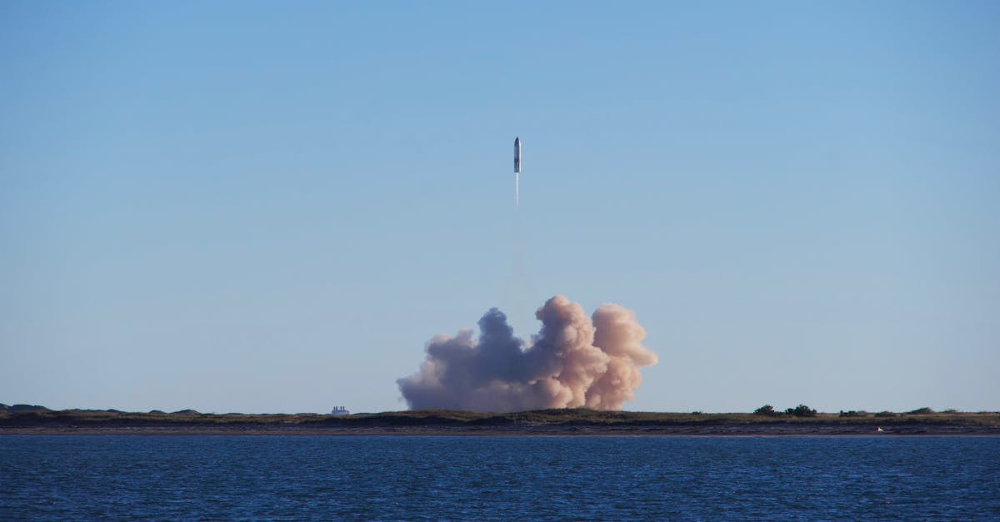
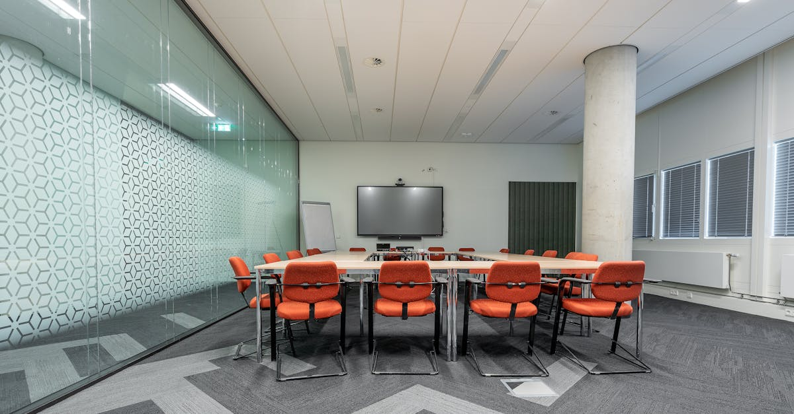

SpaceX et la Course à l'IPO Historique : Une Nouvelle Ère pour l'Investissement
L'univers de l'investissement connaît une agitation sans précédent avec les préparatifs de ce qui s'annonce comme la plus grande introduction en bourse (IPO) de l'histoire : celle de SpaceX. La société d'Elon Musk, pionnière de l'exploration spatiale privée, franchit une étape décisive en ouvrant ses portes aux potentiels investisseurs majeurs. Selon des sources proches du dossier rapportées par Bloomberg Technology, SpaceX prévoit d'organiser des visites de ses sites les plus emblématiques à travers les États-Unis. Cette démarche stratégique vise à séduire et rassurer les grands noms de la finance avant le grand saut sur les marchés. L'objectif est clair : lever des fonds considérables pour financer ses ambitions pharaoniques, allant de la conquête martienne à la constellation de satellites Starlink. Pour les investisseurs, qu'ils soient traditionnels ou plus audacieux, cette IPO représente une opportunité unique de s'impliquer dans une entreprise qui redéfinit les frontières du possible. L'importance de tels événements pour le secteur technologique et financier ne peut être sous-estimée. Ils attirent non seulement des capitaux massifs mais stimulent également l'innovation et la compétition. Dans un monde où la technologie évolue à une vitesse exponentielle, des entreprises comme SpaceX, qui repoussent constamment les limites, deviennent des cibles d'investissement de premier plan. La préparation minutieuse de cette IPO, incluant ces visites exclusives, témoigne de la volonté de SpaceX de maîtriser chaque aspect de sa présentation au public financier. Cela souligne également la maturité atteinte par l'entreprise, capable désormais de naviguer dans les complexités du marché boursier après des années de succès technologiques et opérationnels. La perception de ces visites par les investisseurs sera cruciale pour la valorisation finale et le succès de l'introduction.

Les Sites Stratégiques de SpaceX : Un Aperçu Exclusif pour les Investisseurs Clés
La décision de SpaceX d'emmener ses investisseurs potentiels visiter ses installations n'est pas anodine. Elle témoigne d'une stratégie de communication transparente et immersive, visant à démontrer concrètement la puissance industrielle et l'innovation qui animent l'entreprise. Ces visites guidées porteront sur des sites majeurs, chacun jouant un rôle crucial dans la chaîne de valeur de SpaceX. On peut imaginer des étapes clés comme le centre spatial Kennedy en Floride, d'où partent de nombreuses missions, ou encore les installations de Starbase au Texas, berceau du développement du vaisseau Starship. Ces lieux ne sont pas de simples usines ; ce sont des centres névralgiques où l'avenir de l'aérospatiale se dessine jour après jour. Les investisseurs auront ainsi l'occasion de voir de près les lignes d'assemblage des fusées Falcon 9 et Falcon Heavy, d'observer les tests des moteurs Raptor, et de comprendre l'ampleur des opérations liées à la constellation Starlink. La capacité de SpaceX à produire en masse des lanceurs et des satellites est un argument de poids. De plus, la visite de ces sites permet de matérialiser la vision d'Elon Musk, souvent perçue comme futuriste, en la confrontant à la réalité opérationnelle. La présence de ces investisseurs sur le terrain leur permettra de juger de l'efficacité des équipes, de la qualité des infrastructures et du potentiel de croissance futur. Cette approche directe contraste avec les présentations virtuelles ou les rapports financiers classiques. Elle vise à créer un lien émotionnel et une confiance accrue, éléments essentiels pour des investissements de cette ampleur. L'accent sera probablement mis sur les avancées technologiques, la cadence de production, et les succès passés qui attestent de la fiabilité des systèmes de SpaceX. Ces visites sont une véritable démonstration de force, visant à confirmer que SpaceX n'est pas seulement une promesse, mais une réalité industrielle redoutable.
L'Impact de l'IPO SpaceX sur les Marchés Financiers et Technologiques
L'entrée de SpaceX en bourse est bien plus qu'un simple événement financier ; c'est un catalyseur potentiel pour l'ensemble des marchés, en particulier ceux liés à la technologie et à l'innovation. Une IPO de cette envergure peut redéfinir les attentes en matière de valorisation pour les entreprises technologiques, notamment celles opérant dans des secteurs de pointe comme l'aérospatiale, l'IA ou encore les énergies renouvelables. La capitalisation boursière attendue pour SpaceX pourrait s'élever à plusieurs centaines de milliards de dollars, un chiffre qui rivalise avec les géants de la tech déjà établis. Cela pourrait inciter davantage d'investisseurs institutionnels et particuliers à se tourner vers ces secteurs à fort potentiel de croissance, mais aussi à plus haut risque. L'effet d'entraînement est indéniable. D'une part, le succès de SpaceX pourrait stimuler une vague d'IPO dans le secteur spatial, créant un écosystème d'investissement plus dynamique. D'autre part, la démonstration de la viabilité économique des missions spatiales ambitieuses pourrait attirer des capitaux vers d'autres projets d'envergure, potentiellement liés à l'exploration, aux ressources spatiales ou aux infrastructures orbitales. Pour les entreprises qui, comme CryptoMind AI, développent des solutions basées sur l'intelligence artificielle pour optimiser les stratégies de trading, l'attention accrue portée aux entreprises technologiques de rupture peut se traduire par un intérêt renouvelé pour leurs propres innovations. Les marchés financiers sont de plus en plus friands d'outils permettant d'analyser et de prédire les mouvements de prix dans des secteurs volatils. L'IA appliquée au trading de cryptomonnaies, par exemple, bénéficie de cet appétit pour l'innovation et les solutions disruptives. Une IPO réussie de SpaceX validerait la capacité de ces entreprises à générer des rendements significatifs, même dans des domaines considérés comme spéculatifs ou de niche. Cela pourrait ouvrir de nouvelles portes pour le financement et l'adoption de technologies avancées, y compris celles qui automatisent et optimisent les décisions d'investissement.

Starlink et Starship : Les Piliers de la Croissance Future de SpaceX
Au cœur de la stratégie de SpaceX résident deux projets phares : Starlink et Starship. Ces initiatives ne sont pas seulement des démonstrations technologiques ; elles constituent les moteurs principaux de la croissance future et de la rentabilité de l'entreprise, éléments cruciaux pour justifier une valorisation boursière aussi élevée. Starlink, le projet de constellation de satellites internet à large bande, est déjà opérationnel et en pleine expansion. Il vise à fournir un accès internet haut débit dans les zones mal desservies, voire inaccessibles, par les infrastructures terrestres traditionnelles. Le potentiel commercial est immense, allant des particuliers aux entreprises, en passant par les gouvernements et les applications maritimes ou aériennes. Les revenus générés par Starlink pourraient devenir une source de financement stable et récurrente, venant diversifier les activités de lancement de SpaceX. L'agilité et la capacité de SpaceX à déployer rapidement des milliers de satellites sont des avantages concurrentiels majeurs. Starship, quant à lui, représente la vision à long terme d'Elon Musk : rendre la vie multiplanétaire. Ce vaisseau entièrement réutilisable est conçu pour transporter des charges utiles massives, y compris des humains, vers la Lune, Mars et au-delà. Au-delà de l'exploration spatiale, Starship ouvre la voie à de nouvelles opportunités économiques : tourisme spatial, exploitation des ressources lunaires ou martiennes, et potentiellement même des liaisons intercontinentales ultra-rapides sur Terre. La réussite du développement de Starship est donc primordiale pour la perception future de la valeur de SpaceX. Les investisseurs chercheront à comprendre le calendrier de développement, les coûts associés et le potentiel de revenus de ces deux projets. La synergie entre Starlink et Starship est également un point fort : les satellites Starlink peuvent être déployés plus efficacement grâce à la capacité de Starship, et les infrastructures martiennes pourraient un jour être soutenues par Starlink. Ces projets incarnent l'ambition de SpaceX de créer un écosystème spatial complet et auto-suffisant.
L'Intelligence Artificielle et le Trading de Cryptomonnaies : Une Synergie à l'Ère Spatiale
Alors que SpaceX se prépare à conquérir les marchés financiers, une autre révolution technologique gagne du terrain : celle de l'intelligence artificielle appliquée au trading de cryptomonnaies. Chez CryptoMind AI, nous sommes convaincus que l'avenir de l'investissement, qu'il soit terrestre ou spatial, réside dans l'automatisation intelligente et l'analyse prédictive. Le marché des cryptomonnaies, par sa nature volatile et complexe, se prête particulièrement bien aux approches basées sur l'IA. Les agents IA, tels que ceux développés par CryptoMind AI, sont capables d'analyser d'énormes volumes de données en temps réel – données de marché, actualités, sentiment des réseaux sociaux, indicateurs techniques – pour identifier des opportunités de trading que l'œil humain pourrait manquer. Contrairement aux traders humains, un agent IA peut opérer 24h/24, 7j/7, sans fatigue ni biais émotionnel, exécutant des stratégies optimisées avec une précision chirurgicale. La préparation de l'IPO de SpaceX, avec ses implications technologiques et financières, crée un environnement où l'innovation est valorisée. Les investisseurs cherchent des moyens de maximiser leurs rendements dans un paysage financier en constante évolution. L'IA offre une solution puissante pour naviguer dans la complexité des marchés, y compris ceux des actifs numériques émergents. L'automatisation du trading via des agents IA permet non seulement d'améliorer la performance, mais aussi de gérer les risques de manière plus efficace. En analysant les tendances macroéconomiques, les développements technologiques (comme ceux de SpaceX) et les dynamiques spécifiques aux cryptomonnaies, ces agents peuvent ajuster leurs stratégies en temps réel. Pensez à la manière dont une annonce majeure concernant un projet spatial pourrait influencer le marché, ou comment l'adoption croissante de Starlink pourrait avoir des retombées indirectes sur certains actifs numériques. L'IA est l'outil qui permet de capter ces signaux faibles et de transformer l'information en action profitable. L'ère de l'investissement passif touche à sa fin ; l'ère de l'investissement intelligent et automatisé, propulsé par l'IA, est déjà là.

Facteurs Clés à Surveiller Avant et Après l'IPO de SpaceX
L'introduction en bourse de SpaceX sera un événement scruté à la loupe par les analystes, les investisseurs et les observateurs du secteur. Plusieurs facteurs clés détermineront le succès de cette opération et sa trajectoire post-IPO. Premièrement, la valorisation finale. Si le marché juge la valorisation trop élevée par rapport aux fondamentaux actuels ou aux perspectives de revenus à court terme, l'enthousiasme initial pourrait s'estomper rapidement. Les visites des sites par les investisseurs majeurs visent justement à construire un narratif solide pour justifier une valorisation ambitieuse. Deuxièmement, la stratégie de déploiement de capital. Comment SpaceX compte-t-elle utiliser les fonds levés ? Les investisseurs voudront voir un plan clair et crédible pour financer la poursuite du développement de Starship, l'expansion de Starlink, et potentiellement de nouvelles initiatives. La diversification des revenus, notamment via Starlink, sera un point d'attention majeur pour rassurer les marchés sur la pérennité du modèle économique. Troisièmement, la concurrence. Bien que SpaceX soit un leader incontesté, le secteur spatial est de plus en plus compétitif, avec l'émergence d'acteurs comme Blue Origin, et le soutien croissant des agences gouvernementales à d'autres entreprises. La capacité de SpaceX à maintenir son avance technologique et opérationnelle sera cruciale. Enfin, la gouvernance et la vision d'Elon Musk. La présence d'Elon Musk est à la fois une force et un risque potentiel. Sa vision audacieuse est un moteur d'innovation, mais ses prises de position publiques ou ses autres engagements (Tesla, X/Twitter) peuvent parfois susciter des inquiétudes. La structure de gouvernance de SpaceX après l'IPO sera observée de près pour s'assurer qu'elle garantit la stabilité et la concentration sur ses objectifs spatiaux. L'évolution de ces facteurs influencera non seulement la performance de l'action SpaceX, mais aussi la perception générale des investissements dans les technologies de rupture, un domaine où l'IA joue un rôle de plus en plus prépondérant.
Conclusion : L'Avenir de SpaceX et l'Impact sur l'Investissement Technologique
L'IPO imminente de SpaceX marque un tournant historique, non seulement pour l'entreprise elle-même, mais aussi pour l'ensemble du paysage de l'investissement technologique. En ouvrant son capital, SpaceX valide la viabilité économique de l'exploration spatiale privée et ouvre la voie à une nouvelle génération d'entreprises ambitieuses. Les visites organisées pour les investisseurs majeurs témoignent d'une volonté de transparence et de construction d'une valorisation solide, basée sur des réalisations concrètes et une vision claire de l'avenir, incarnée par Starlink et Starship. L'impact de cette introduction en bourse se fera sentir bien au-delà des marchés financiers. Elle stimulera l'innovation, attirera des talents et des capitaux vers le secteur spatial, et pourrait inspirer des avancées technologiques dans des domaines connexes. Pour les investisseurs, c'est une opportunité d'exception de participer à une aventure technologique sans précédent. Cependant, comme pour tout investissement dans des entreprises à forte croissance et à forte composante technologique, les risques sont présents. La volatilité, les défis de développement et la concurrence sont autant de facteurs à considérer. Dans ce contexte d'innovation rapide et de marchés complexes, les outils d'analyse et d'exécution basés sur l'intelligence artificielle, tels que ceux proposés par CryptoMind AI, deviennent essentiels. Ils permettent de naviguer avec plus d'acuité dans ces environnements, en transformant les données en décisions éclairées, 24h/24. L'ère spatiale, portée par des pionniers comme SpaceX, s'accompagne d'une révolution de l'investissement, où l'IA jouera un rôle de plus en plus central pour décrypter et optimiser les opportunités, qu'elles soient sur Terre ou au-delà.